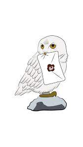

About Me:
I'm a first-year undergraduate at the National Institute of Engineering, delving into the exciting world of Computer
Science Engineering, with a focus on Artificial Intelligence and Machine Learning.
A dedicated problem-solver with a penchant for humor, I thrive in coding challenges. Additionally,
I excel in oration, public speaking, and editing. Eager to learn and grow, I approach every opportunity with enthusiasm,
ready to absorb new knowledge and skills. Whether debugging code or crafting compelling narratives,
I infuse every task with dedication, creativity, and a hint of wit.
Achievements:
- Rotary Club Debate
- Achieved second place in the National Education
Policy debate and honored as the runner-up for
best speaker opposing the motion.
- Inter Zone Declamation Competition
- Secured the third Position in the inter zone
declamation competition organized by CISCE
Skills:
- Communication and interpersonal
skills
- Designing and Editing: Canva
- Programming Languages: JAVA & C
- Experience in Event Management
- Coordination and People
Management
Languages:
Education & Experience:
ISC (Grade:11&12)
- Initiated and Spearheaded the first School E magazine:
-
- Conceptualized, developed, and managed the school's first e-magazine,
showcasing student creativity and talent.
- Managed the editing, curation and writing of the highlight articles of the
magazine while heading two columns
- Acted as a medium between the contributors and editorial team of the e-
magazine and ensured timely publication
- Garnered positive feedback and engagement from the school community,
enhancing digital communication and showcasing leadership and
creativity.
- Compere and Student Council Member, International Macfair:
-
- Engaged as a compere/host for the International Macfair, a renowned
international science competition and event held by the school biennially.
- Crafted engaging scripts and presentations to introduce speakers,
announce events, and maintain audience enthusiasm throughout the
competition.
- Collaborated closely with event organizers, judges, and participants to
uphold the event's standards of professionalism and excellence.
- As a part of the Student Council, mentored and provided extensive
support to two teams assigned to me , one domestic and one
international, guiding them through the competition process and
addressing their needs effectively.
- House captain, student council body:
- Organized inter house competitions and Events